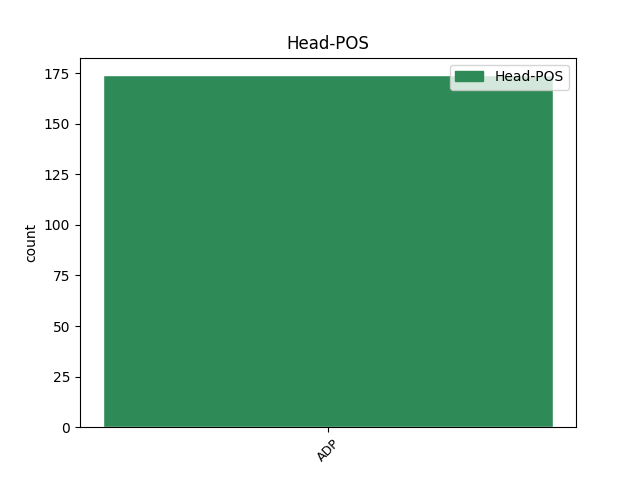

Distribution of features within this leaf

Agreement Rules sorted by frequency.
- When the dependent token is the underspecified dependency(udep) of the head token, and the head token is ADP and the dependent token is NOUN.
1 كما _ _ _ _ 0 _ _ _
2 كشف _ _ _ _ 0 _ _ _
3 اليوم _ _ _ _ 0 _ _ _
4 وزير _ _ _ _ 0 _ _ _
5 الصحة _ _ _ _ 0 _ _ _
6 الكونغولى _ _ _ _ 0 _ _ _
7 مامبا _ _ _ _ 0 _ _ _
8 شاكو _ _ _ _ 0 _ _ _
9 عن _ _ _ _ 0 _ _ _
10 ان _ _ _ _ 0 _ _ _
11 مالا _ _ _ _ 0 _ _ _
12 يقل _ _ _ _ 0 _ _ _
13 عن _ _ _ _ 0 _ _ _
14 30 _ _ _ _ 0 _ _ _
15 شخصا _ _ _ _ 0 _ _ _
16 علم _ _ _ _ 0 _ _ _
17 أن _ _ _ _ 0 _ _ _
18 هم _ _ _ _ 0 _ _ _
19 عادوا _ _ _ _ 0 _ _ _
20 ب _ _ _ _ 0 _ _ _
21 سلامة _ _ _ _ 0 _ _ _
22 مع _ _ _ _ 0 _ _ _
23 طائرة _ _ _ _ 0 _ _ _
24 البضائع _ _ _ _ 0 _ _ _
25 روسية _ _ _ _ 0 _ _ _
26 الصنع _ _ _ _ 0 _ _ _
27 التى _ _ _ _ 0 _ _ _
28 عادت _ _ _ _ 0 _ _ _
29 الى _ _ _ _ 0 _ _ _
30 مطار _ _ _ _ 0 _ _ _
31 كينشاسا _ _ _ _ 0 _ _ _
32 مساء _ _ _ _ 0 _ _ _
33 الخميس _ _ _ _ 0 _ _ _
34 عقب عَقِبَ ADP PI------4- AdpType=Prep|Case=Acc 0 _ _ _
35 انفتاح _ _ _ _ 0 _ _ _
36 الباب _ _ _ _ 0 _ _ _
37 الخلفى _ _ _ _ 0 _ _ _
38 ل _ _ _ _ 0 _ _ _
39 الطائرة _ _ _ _ 0 _ _ _
40 فجأة فَجأَة NOUN N------S4I Case=Acc|Definite=Ind|Number=Sing 34 udep _ Gloss=suddenly|LTranslit=faǧʾat|Root=f_^g_'|Translit=faǧʾatan|Vform=فَجأَةً
41 ل _ _ _ _ 0 _ _ _
42 يلفظ _ _ _ _ 0 _ _ _
43 الركاب _ _ _ _ 0 _ _ _
44 الى _ _ _ _ 0 _ _ _
45 الهواء _ _ _ _ 0 _ _ _
46 على _ _ _ _ 0 _ _ _
47 ارتفاع _ _ _ _ 0 _ _ _
48 2200 _ _ _ _ 0 _ _ _
49 متر _ _ _ _ 0 _ _ _
50 فوق _ _ _ _ 0 _ _ _
51 الدولة _ _ _ _ 0 _ _ _
52 شاسعة _ _ _ _ 0 _ _ _
53 الاراضى _ _ _ _ 0 _ _ _
54 ب _ _ _ _ 0 _ _ _
55 وسط _ _ _ _ 0 _ _ _
56 افريقيا _ _ _ _ 0 _ _ _
57 . _ _ _ _ 0 _ _ _
1 و _ _ _ _ 0 _ _ _
2 قال _ _ _ _ 0 _ _ _
3 إن _ _ _ _ 0 _ _ _
4 السوق _ _ _ _ 0 _ _ _
5 كانت _ _ _ _ 0 _ _ _
6 تنتظر _ _ _ _ 0 _ _ _
7 أي _ _ _ _ 0 _ _ _
8 خبر _ _ _ _ 0 _ _ _
9 إيجابي _ _ _ _ 0 _ _ _
10 كي _ _ _ _ 0 _ _ _
11 تعود _ _ _ _ 0 _ _ _
12 إلى _ _ _ _ 0 _ _ _
13 الارتفاع _ _ _ _ 0 _ _ _
14 ، _ _ _ _ 0 _ _ _
15 مشيراً _ _ _ _ 0 _ _ _
16 إلى _ _ _ _ 0 _ _ _
17 أن _ _ _ _ 0 _ _ _
18 قرار _ _ _ _ 0 _ _ _
19 رفع _ _ _ _ 0 _ _ _
20 اسم _ _ _ _ 0 _ _ _
21 مصر _ _ _ _ 0 _ _ _
22 من _ _ _ _ 0 _ _ _
23 قائمة _ _ _ _ 0 _ _ _
24 غسيل _ _ _ _ 0 _ _ _
25 الأموال _ _ _ _ 0 _ _ _
26 جاء _ _ _ _ 0 _ _ _
27 ب _ _ _ _ 0 _ _ _
28 مثابة _ _ _ _ 0 _ _ _
29 نقطة _ _ _ _ 0 _ _ _
30 تحول _ _ _ _ 0 _ _ _
31 في _ _ _ _ 0 _ _ _
32 السوق _ _ _ _ 0 _ _ _
33 في _ _ _ _ 0 _ _ _
34 الوقت _ _ _ _ 0 _ _ _
35 الحالي _ _ _ _ 0 _ _ _
36 ل _ _ _ _ 0 _ _ _
37 تعاود _ _ _ _ 0 _ _ _
38 اتجاه _ _ _ _ 0 _ _ _
39 ها _ _ _ _ 0 _ _ _
40 الصعودي _ _ _ _ 0 _ _ _
41 خاصة خَاصّ ADJ A-----FS4I Case=Acc|Definite=Ind|Gender=Fem|Number=Sing 42 mod@emph _ Gloss=special,specific|LTranslit=ḫāṣṣ|Root=_h_.s_.s|Translit=ḫāṣṣatan|Vform=خَاصَّةً
42 مع مَعَ ADP PI------4- AdpType=Prep|Case=Acc 0 _ _ _
43 الاتجاه _ _ _ _ 0 _ _ _
44 ل _ _ _ _ 0 _ _ _
45 إبقاء _ _ _ _ 0 _ _ _
46 أسعار _ _ _ _ 0 _ _ _
47 الفائدة _ _ _ _ 0 _ _ _
48 عند _ _ _ _ 0 _ _ _
49 معدلات _ _ _ _ 0 _ _ _
50 ها _ _ _ _ 0 _ _ _
51 إن _ _ _ _ 0 _ _ _
52 لم _ _ _ _ 0 _ _ _
53 يكن _ _ _ _ 0 _ _ _
54 خفض _ _ _ _ 0 _ _ _
55 ها _ _ _ _ 0 _ _ _
56 من _ _ _ _ 0 _ _ _
57 قبل _ _ _ _ 0 _ _ _
58 البنك _ _ _ _ 0 _ _ _
59 المركزي _ _ _ _ 0 _ _ _
60 . _ _ _ _ 0 _ _ _
1 و _ _ _ _ 0 _ _ _
2 رحب _ _ _ _ 0 _ _ _
3 المحللون _ _ _ _ 0 _ _ _
4 ب _ _ _ _ 0 _ _ _
5 تصريحات _ _ _ _ 0 _ _ _
6 محيي _ _ _ _ 0 _ _ _
7 الدين _ _ _ _ 0 _ _ _
8 ، _ _ _ _ 0 _ _ _
9 لٰكن _ _ _ _ 0 _ _ _
10 هم _ _ _ _ 0 _ _ _
11 قالوا _ _ _ _ 0 _ _ _
12 إن _ _ _ _ 0 _ _ _
13 ه _ _ _ _ 0 _ _ _
14 طالما _ _ _ _ 0 _ _ _
15 أعرب _ _ _ _ 0 _ _ _
16 عن _ _ _ _ 0 _ _ _
17 هذه _ _ _ _ 0 _ _ _
18 الآراء _ _ _ _ 0 _ _ _
19 الإصلاحية _ _ _ _ 0 _ _ _
20 و _ _ _ _ 0 _ _ _
21 إن _ _ _ _ 0 _ _ _
22 ه _ _ _ _ 0 _ _ _
23 من _ _ _ _ 0 _ _ _
24 غير _ _ _ _ 0 _ _ _
25 الواضح _ _ _ _ 0 _ _ _
26 بعد بَعدَ ADP PI------1- AdpType=Prep|Case=Nom 0 _ _ _
27 ما _ _ _ _ 0 _ _ _
28 هي هُوَ PRON SP---3FS1- Case=Nom|Gender=Fem|Number=Sing|Person=3|PronType=Prs 26 subj _ Gloss=he,it,she|LTranslit=huwa|Translit=hiya|Vform=هِيَ
29 الصلاحيات _ _ _ _ 0 _ _ _
30 التي _ _ _ _ 0 _ _ _
31 يتمتع _ _ _ _ 0 _ _ _
32 ب _ _ _ _ 0 _ _ _
33 ها _ _ _ _ 0 _ _ _
34 المجلس _ _ _ _ 0 _ _ _
35 الجديد _ _ _ _ 0 _ _ _
36 و _ _ _ _ 0 _ _ _
37 محافظ _ _ _ _ 0 _ _ _
38 المركزي _ _ _ _ 0 _ _ _
39 الجديد _ _ _ _ 0 _ _ _
40 في _ _ _ _ 0 _ _ _
41 ما _ _ _ _ 0 _ _ _
42 يتعلق _ _ _ _ 0 _ _ _
43 ب _ _ _ _ 0 _ _ _
44 وضع _ _ _ _ 0 _ _ _
45 السياسات _ _ _ _ 0 _ _ _
46 . _ _ _ _ 0 _ _ _
1 و _ _ _ _ 0 _ _ _
2 كان _ _ _ _ 0 _ _ _
3 باول _ _ _ _ 0 _ _ _
4 قد _ _ _ _ 0 _ _ _
5 مهد _ _ _ _ 0 _ _ _
6 ل _ _ _ _ 0 _ _ _
7 زيارة _ _ _ _ 0 _ _ _
8 ه _ _ _ _ 0 _ _ _
9 هذه _ _ _ _ 0 _ _ _
10 ب _ _ _ _ 0 _ _ _
11 حديث _ _ _ _ 0 _ _ _
12 امام _ _ _ _ 0 _ _ _
13 لجنة _ _ _ _ 0 _ _ _
14 العلاقات _ _ _ _ 0 _ _ _
15 الخارجية _ _ _ _ 0 _ _ _
16 في _ _ _ _ 0 _ _ _
17 مجلس _ _ _ _ 0 _ _ _
18 الشيوخ _ _ _ _ 0 _ _ _
19 الامريكي _ _ _ _ 0 _ _ _
20 اشار _ _ _ _ 0 _ _ _
21 في _ _ _ _ 0 _ _ _
22 ه _ _ _ _ 0 _ _ _
23 الى _ _ _ _ 0 _ _ _
24 أن _ _ _ _ 0 _ _ _
25 ه _ _ _ _ 0 _ _ _
26 س _ _ _ _ 0 _ _ _
27 يثير _ _ _ _ 0 _ _ _
28 مع _ _ _ _ 0 _ _ _
29 الرئيس _ _ _ _ 0 _ _ _
30 السوري _ _ _ _ 0 _ _ _
31 بشار _ _ _ _ 0 _ _ _
32 الاسد _ _ _ _ 0 _ _ _
33 جميع _ _ _ _ 0 _ _ _
34 نقاط _ _ _ _ 0 _ _ _
35 الخلاف _ _ _ _ 0 _ _ _
36 التقليدية _ _ _ _ 0 _ _ _
37 بين _ _ _ _ 0 _ _ _
38 واشنطن _ _ _ _ 0 _ _ _
39 و _ _ _ _ 0 _ _ _
40 دمشق _ _ _ _ 0 _ _ _
41 مثل مِثلَ ADP PI------4- AdpType=Prep|Case=Acc 0 _ _ _
42 الارهاب _ _ _ _ 0 _ _ _
43 و _ _ _ _ 0 _ _ _
44 أسلحة _ _ _ _ 0 _ _ _
45 الدمار _ _ _ _ 0 _ _ _
46 الشامل _ _ _ _ 0 _ _ _
47 و _ _ _ _ 0 _ _ _
48 تلك _ _ _ _ 0 _ _ _
49 الناجمة نَاجِم ADJ A-----FS4D Case=Acc|Definite=Def|Gender=Fem|Number=Sing 41 conj _ Gloss=arising,derived,originating|LTranslit=nāǧim|Root=n_^g_m|Translit=an-nāǧimata|Vform=اَلنَّاجِمَةَ
50 عن _ _ _ _ 0 _ _ _
51 الحرب _ _ _ _ 0 _ _ _
52 على _ _ _ _ 0 _ _ _
53 العراق _ _ _ _ 0 _ _ _
54 . _ _ _ _ 0 _ _ _
1 و _ _ _ _ 0 _ _ _
2 بدا _ _ _ _ 0 _ _ _
3 الحضور _ _ _ _ 0 _ _ _
4 الكثيف _ _ _ _ 0 _ _ _
5 ل _ _ _ _ 0 _ _ _
6 المسؤولين _ _ _ _ 0 _ _ _
7 علامة _ _ _ _ 0 _ _ _
8 بارزة _ _ _ _ 0 _ _ _
9 على _ _ _ _ 0 _ _ _
10 الحرص _ _ _ _ 0 _ _ _
11 على _ _ _ _ 0 _ _ _
12 أن _ _ _ _ 0 _ _ _
13 لا _ _ _ _ 0 _ _ _
14 تؤثر _ _ _ _ 0 _ _ _
15 أحداث _ _ _ _ 0 _ _ _
16 عارضة _ _ _ _ 0 _ _ _
17 على _ _ _ _ 0 _ _ _
18 استمرار _ _ _ _ 0 _ _ _
19 شنودة _ _ _ _ 0 _ _ _
20 في _ _ _ _ 0 _ _ _
21 إقامة _ _ _ _ 0 _ _ _
22 الإفطار _ _ _ _ 0 _ _ _
23 التقليدي _ _ _ _ 0 _ _ _
24 السنوي _ _ _ _ 0 _ _ _
25 الذي _ _ _ _ 0 _ _ _
26 بدأ _ _ _ _ 0 _ _ _
27 ه _ _ _ _ 0 _ _ _
28 قبل قَبلَ ADP PI------4- AdpType=Prep|Case=Acc 0 _ _ _
29 نحو _ _ _ _ 0 _ _ _
30 19 _ _ _ _ 0 _ _ _
31 عاما عَام NOUN N------S4I Case=Acc|Definite=Ind|Number=Sing 28 parataxis _ Gloss=year|LTranslit=ʿām|Root=`_w_m|SpaceAfter=No|Translit=ʿāman|Vform=عَامًا
32 . _ _ _ _ 0 _ _ _
1 و _ _ _ _ 0 _ _ _
2 حسب _ _ _ _ 0 _ _ _
3 المعلومات _ _ _ _ 0 _ _ _
4 التى _ _ _ _ 0 _ _ _
5 نشرت _ _ _ _ 0 _ _ _
6 ها _ _ _ _ 0 _ _ _
7 منظمة _ _ _ _ 0 _ _ _
8 الصحة _ _ _ _ 0 _ _ _
9 العالمية _ _ _ _ 0 _ _ _
10 فى _ _ _ _ 0 _ _ _
11 26 _ _ _ _ 0 _ _ _
12 نوفمبر _ _ _ _ 0 _ _ _
13 2002 _ _ _ _ 0 _ _ _
14 ف _ _ _ _ 0 _ _ _
15 ان _ _ _ _ 0 _ _ _
16 نسبة _ _ _ _ 0 _ _ _
17 الوفيات _ _ _ _ 0 _ _ _
18 ب _ _ _ _ 0 _ _ _
19 الإنفلونزا _ _ _ _ 0 _ _ _
20 الشديد _ _ _ _ 0 _ _ _
21 ب _ _ _ _ 0 _ _ _
22 العالم _ _ _ _ 0 _ _ _
23 قاطبة _ _ _ _ 0 _ _ _
24 تتراوح _ _ _ _ 0 _ _ _
25 بين بَينَ ADP PI------4- AdpType=Prep|Case=Acc 0 _ _ _
26 8 _ _ _ _ 0 _ _ _
27 و _ _ _ _ 0 _ _ _
28 10 _ _ _ _ 0 _ _ _
29 ب _ _ _ _ 0 _ _ _
30 المئة _ _ _ _ 0 _ _ _
31 سنويا سَنَوِيّ ADJ A-----MS4I Case=Acc|Definite=Ind|Gender=Masc|Number=Sing 25 udep _ Gloss=annual,per_annum,yearly|LTranslit=sanawīy|Root=s_n_w|Translit=sanawīyan|Vform=سَنَوِيًّا
32 . _ _ _ _ 0 _ _ _
33 و _ _ _ _ 0 _ _ _
34 اتضح _ _ _ _ 0 _ _ _
35 من _ _ _ _ 0 _ _ _
36 ذلك _ _ _ _ 0 _ _ _
37 ان _ _ _ _ 0 _ _ _
38 نسبة _ _ _ _ 0 _ _ _
39 الوفيات _ _ _ _ 0 _ _ _
40 ب _ _ _ _ 0 _ _ _
41 الإنفلونزا _ _ _ _ 0 _ _ _
42 الشديد _ _ _ _ 0 _ _ _
43 اعلى _ _ _ _ 0 _ _ _
44 من _ _ _ _ 0 _ _ _
45 نسبة _ _ _ _ 0 _ _ _
46 ها _ _ _ _ 0 _ _ _
47 ب _ _ _ _ 0 _ _ _
48 السارس _ _ _ _ 0 _ _ _
49 . _ _ _ _ 0 _ _ _
1 و _ _ _ _ 0 _ _ _
2 نقل _ _ _ _ 0 _ _ _
3 البيان _ _ _ _ 0 _ _ _
4 عن _ _ _ _ 0 _ _ _
5 ممثل _ _ _ _ 0 _ _ _
6 اليونيسيف _ _ _ _ 0 _ _ _
7 فى _ _ _ _ 0 _ _ _
8 مدينة _ _ _ _ 0 _ _ _
9 بغداد _ _ _ _ 0 _ _ _
10 كارل _ _ _ _ 0 _ _ _
11 دى _ _ _ _ 0 _ _ _
12 روى _ _ _ _ 0 _ _ _
13 قول _ _ _ _ 0 _ _ _
14 ه _ _ _ _ 0 _ _ _
15 ان _ _ _ _ 0 _ _ _
16 بغداد _ _ _ _ 0 _ _ _
17 اليوم _ _ _ _ 0 _ _ _
18 مختلفة _ _ _ _ 0 _ _ _
19 كثيرا _ _ _ _ 0 _ _ _
20 عن _ _ _ _ 0 _ _ _
21 بغداد _ _ _ _ 0 _ _ _
22 الامس _ _ _ _ 0 _ _ _
23 التى _ _ _ _ 0 _ _ _
24 ترك _ _ _ _ 0 _ _ _
25 ها _ _ _ _ 0 _ _ _
26 قبل _ _ _ _ 0 _ _ _
27 سبعة _ _ _ _ 0 _ _ _
28 اسابيع _ _ _ _ 0 _ _ _
29 و _ _ _ _ 0 _ _ _
30 أن _ _ _ _ 0 _ _ _
31 امام أَمَامَ ADP PI------4- AdpType=Prep|Case=Acc 0 _ _ _
32 موظفي _ _ _ _ 0 _ _ _
33 ه _ _ _ _ 0 _ _ _
34 اعمالا عَمَل NOUN N------P4I Case=Acc|Definite=Ind|Number=Plur 31 subj _ Gloss=action,activities,work|LTranslit=ʿamal|Root=`_m_l|Translit=ʾaʿmālan|Vform=أَعمَالًا
35 ضخمة _ _ _ _ 0 _ _ _
36 . _ _ _ _ 0 _ _ _
Disagree Examples:
1 و _ _ _ _ 0 _ _ _
2 في _ _ _ _ 0 _ _ _
3 21 _ _ _ _ 0 _ _ _
4 حزيران _ _ _ _ 0 _ _ _
5 / _ _ _ _ 0 _ _ _
6 يونيو _ _ _ _ 0 _ _ _
7 ، _ _ _ _ 0 _ _ _
8 شدد _ _ _ _ 0 _ _ _
9 وزير _ _ _ _ 0 _ _ _
10 الدفاع _ _ _ _ 0 _ _ _
11 الاسباني _ _ _ _ 0 _ _ _
12 فيديريكو _ _ _ _ 0 _ _ _
13 تريو _ _ _ _ 0 _ _ _
14 على _ _ _ _ 0 _ _ _
15 ان _ _ _ _ 0 _ _ _
16 العقد _ _ _ _ 0 _ _ _
17 الموقع _ _ _ _ 0 _ _ _
18 في _ _ _ _ 0 _ _ _
19 نهاية _ _ _ _ 0 _ _ _
20 عام _ _ _ _ 0 _ _ _
21 1998 _ _ _ _ 0 _ _ _
22 بين بَينَ ADP PI------4- AdpType=Prep|Case=Acc 0 _ _ _
23 سانتا _ _ _ _ 0 _ _ _
24 بربارة _ _ _ _ 0 _ _ _
25 و _ _ _ _ 0 _ _ _
26 منتجي مُنتِج NOUN N------D2R Case=Gen|Definite=Cons|Number=Dual 22 conj _ Gloss=maker,manufacturer,producer|LTranslit=muntiǧ|Root=n_t_^g|Translit=muntiǧay|Vform=مُنتِجَي
27 الدبابة _ _ _ _ 0 _ _ _
28 الالمانية _ _ _ _ 0 _ _ _
29 ، _ _ _ _ 0 _ _ _
30 ك _ _ _ _ 0 _ _ _
31 روس _ _ _ _ 0 _ _ _
32 مافييه _ _ _ _ 0 _ _ _
33 ورينمينتال _ _ _ _ 0 _ _ _
34 ل _ _ _ _ 0 _ _ _
35 تصنيع _ _ _ _ 0 _ _ _
36 الدبابة _ _ _ _ 0 _ _ _
37 في _ _ _ _ 0 _ _ _
38 اسبانيا _ _ _ _ 0 _ _ _
39 و _ _ _ _ 0 _ _ _
40 إنتاج _ _ _ _ 0 _ _ _
41 235 _ _ _ _ 0 _ _ _
42 دبابة _ _ _ _ 0 _ _ _
43 ليوبارد _ _ _ _ 0 _ _ _
44 2 _ _ _ _ 0 _ _ _
45 خلال _ _ _ _ 0 _ _ _
46 عشر _ _ _ _ 0 _ _ _
47 سنوات _ _ _ _ 0 _ _ _
48 ، _ _ _ _ 0 _ _ _
49 يتضمن _ _ _ _ 0 _ _ _
50 بندا _ _ _ _ 0 _ _ _
51 ل _ _ _ _ 0 _ _ _
52 حماية _ _ _ _ 0 _ _ _
53 التكنولوجيا _ _ _ _ 0 _ _ _
54 الالمانية _ _ _ _ 0 _ _ _
55 و _ _ _ _ 0 _ _ _
56 يجب _ _ _ _ 0 _ _ _
57 في _ _ _ _ 0 _ _ _
58 " _ _ _ _ 0 _ _ _
59 جميع _ _ _ _ 0 _ _ _
60 الاحوال _ _ _ _ 0 _ _ _
61 " _ _ _ _ 0 _ _ _
62 ان _ _ _ _ 0 _ _ _
63 تحترم _ _ _ _ 0 _ _ _
64 ه _ _ _ _ 0 _ _ _
65 شركة _ _ _ _ 0 _ _ _
66 " _ _ _ _ 0 _ _ _
67 جنرال _ _ _ _ 0 _ _ _
68 ديناميكس _ _ _ _ 0 _ _ _
69 " _ _ _ _ 0 _ _ _
70 الاميركية _ _ _ _ 0 _ _ _
71 . _ _ _ _ 0 _ _ _
1 لاغوس _ _ _ _ 0 _ _ _
2 15 _ _ _ _ 0 _ _ _
3 - _ _ _ _ 0 _ _ _
4 7 _ _ _ _ 0 _ _ _
5 ( _ _ _ _ 0 _ _ _
6 اف _ _ _ _ 0 _ _ _
7 ب _ _ _ _ 0 _ _ _
8 ) _ _ _ _ 0 _ _ _
9 - _ _ _ _ 0 _ _ _
10 ذكرت _ _ _ _ 0 _ _ _
11 الشرطة _ _ _ _ 0 _ _ _
12 النيجيرية _ _ _ _ 0 _ _ _
13 اليوم _ _ _ _ 0 _ _ _
14 السبت _ _ _ _ 0 _ _ _
15 ان _ _ _ _ 0 _ _ _
16 ما _ _ _ _ 0 _ _ _
17 لا _ _ _ _ 0 _ _ _
18 يقل _ _ _ _ 0 _ _ _
19 عن _ _ _ _ 0 _ _ _
20 12 _ _ _ _ 0 _ _ _
21 شخصا _ _ _ _ 0 _ _ _
22 قتلوا _ _ _ _ 0 _ _ _
23 في _ _ _ _ 0 _ _ _
24 مواجهات _ _ _ _ 0 _ _ _
25 استمرت _ _ _ _ 0 _ _ _
26 يومين _ _ _ _ 0 _ _ _
27 في _ _ _ _ 0 _ _ _
28 سوق _ _ _ _ 0 _ _ _
29 في _ _ _ _ 0 _ _ _
30 لاغوس _ _ _ _ 0 _ _ _
31 بين بَينَ ADP PI------4- AdpType=Prep|Case=Acc 0 _ _ _
32 تجار _ _ _ _ 0 _ _ _
33 و _ _ _ _ 0 _ _ _
34 زقاقيين زُقَاقِيّ ADJ A-----MP2I Case=Gen|Definite=Ind|Gender=Masc|Number=Plur 31 conj _ Gloss=alley_dweller|LTranslit=zuqāqīy|Root=z_q_q|Translit=zuqāqīyīna|Vform=زُقَاقِيِّينَ
35 . _ _ _ _ 0 _ _ _
1 1987 _ _ _ _ 0 _ _ _
2 - _ _ _ _ 0 _ _ _
3 قطع _ _ _ _ 0 _ _ _
4 العلاقات _ _ _ _ 0 _ _ _
5 الدبلوماسية _ _ _ _ 0 _ _ _
6 بين بَينَ ADP PI------4- AdpType=Prep|Case=Acc 0 _ _ _
7 فرنسا _ _ _ _ 0 _ _ _
8 و _ _ _ _ 0 _ _ _
9 إيران إِيرَان NOUN N------S2I Case=Gen|Definite=Ind|Number=Sing 6 conj _ Gloss=Iran|LTranslit=ʾīrān|Root='IrAn|Translit=ʾīrāna|Vform=إِيرَانَ
10 اثر _ _ _ _ 0 _ _ _
11 رفض _ _ _ _ 0 _ _ _
12 مترجم _ _ _ _ 0 _ _ _
13 السفارة _ _ _ _ 0 _ _ _
14 الايرانية _ _ _ _ 0 _ _ _
15 في _ _ _ _ 0 _ _ _
16 باريس _ _ _ _ 0 _ _ _
17 وحيد _ _ _ _ 0 _ _ _
18 غورجي _ _ _ _ 0 _ _ _
19 المثول _ _ _ _ 0 _ _ _
20 امام _ _ _ _ 0 _ _ _
21 القضاء _ _ _ _ 0 _ _ _
22 في _ _ _ _ 0 _ _ _
23 اطار _ _ _ _ 0 _ _ _
24 التحقيق _ _ _ _ 0 _ _ _
25 في _ _ _ _ 0 _ _ _
26 اعتداءات _ _ _ _ 0 _ _ _
27 وقعت _ _ _ _ 0 _ _ _
28 في _ _ _ _ 0 _ _ _
29 1986 _ _ _ _ 0 _ _ _
30 في _ _ _ _ 0 _ _ _
31 باريس _ _ _ _ 0 _ _ _
32 . _ _ _ _ 0 _ _ _
1 و _ _ _ _ 0 _ _ _
2 كان _ _ _ _ 0 _ _ _
3 اهالي _ _ _ _ 0 _ _ _
4 المدن _ _ _ _ 0 _ _ _
5 التي _ _ _ _ 0 _ _ _
6 هبطت _ _ _ _ 0 _ _ _
7 في _ _ _ _ 0 _ _ _
8 ها _ _ _ _ 0 _ _ _
9 الطائرتان _ _ _ _ 0 _ _ _
10 قد _ _ _ _ 0 _ _ _
11 استقبلوا _ _ _ _ 0 _ _ _
12 الطيارين _ _ _ _ 0 _ _ _
13 استقبال _ _ _ _ 0 _ _ _
14 الابطال _ _ _ _ 0 _ _ _
15 و _ _ _ _ 0 _ _ _
16 قامت _ _ _ _ 0 _ _ _
17 الصحف _ _ _ _ 0 _ _ _
18 الصادرة _ _ _ _ 0 _ _ _
19 في _ _ _ _ 0 _ _ _
20 ذلك _ _ _ _ 0 _ _ _
21 الوقت _ _ _ _ 0 _ _ _
22 " _ _ _ _ 0 _ _ _
23 الحارس _ _ _ _ 0 _ _ _
24 و _ _ _ _ 0 _ _ _
25 الاصلاح _ _ _ _ 0 _ _ _
26 اللبنانيتين _ _ _ _ 0 _ _ _
27 و _ _ _ _ 0 _ _ _
28 الشعب _ _ _ _ 0 _ _ _
29 المصرية _ _ _ _ 0 _ _ _
30 " _ _ _ _ 0 _ _ _
31 ب _ _ _ _ 0 _ _ _
32 إبراز _ _ _ _ 0 _ _ _
33 اخبار _ _ _ _ 0 _ _ _
34 الطائرتين _ _ _ _ 0 _ _ _
35 ب _ _ _ _ 0 _ _ _
36 التفاصيل _ _ _ _ 0 _ _ _
37 الدقيقة _ _ _ _ 0 _ _ _
38 و _ _ _ _ 0 _ _ _
39 حملت _ _ _ _ 0 _ _ _
40 صفحات _ _ _ _ 0 _ _ _
41 ها _ _ _ _ 0 _ _ _
42 قصائد _ _ _ _ 0 _ _ _
43 المديح _ _ _ _ 0 _ _ _
44 من _ _ _ _ 0 _ _ _
45 الشعراء _ _ _ _ 0 _ _ _
46 مثل مِثلَ ADP PI------4- AdpType=Prep|Case=Acc 0 _ _ _
47 حافظ _ _ _ _ 0 _ _ _
48 ابراهيم _ _ _ _ 0 _ _ _
49 و _ _ _ _ 0 _ _ _
50 جورج _ _ _ _ 0 _ _ _
51 حرفوش _ _ _ _ 0 _ _ _
52 و _ _ _ _ 0 _ _ _
53 غير غَير NOUN N------S2R Case=Gen|Definite=Cons|Number=Sing 46 conj _ Gloss=non_-,not,other,unlike|LTranslit=ġayr|Root=.g_y_r|Translit=ġayri|Vform=غَيرِ
54 هم _ _ _ _ 0 _ _ _
55 . _ _ _ _ 0 _ _ _
1 وادي _ _ _ _ 0 _ _ _
2 مرجعيون _ _ _ _ 0 _ _ _
3 15 _ _ _ _ 0 _ _ _
4 - _ _ _ _ 0 _ _ _
5 8 _ _ _ _ 0 _ _ _
6 ( _ _ _ _ 0 _ _ _
7 اف _ _ _ _ 0 _ _ _
8 ب _ _ _ _ 0 _ _ _
9 ) _ _ _ _ 0 _ _ _
10 - _ _ _ _ 0 _ _ _
11 افاد _ _ _ _ 0 _ _ _
12 مراسل _ _ _ _ 0 _ _ _
13 وكالة _ _ _ _ 0 _ _ _
14 فرانس _ _ _ _ 0 _ _ _
15 برس _ _ _ _ 0 _ _ _
16 ان _ _ _ _ 0 _ _ _
17 عشرين _ _ _ _ 0 _ _ _
18 لبنانيا _ _ _ _ 0 _ _ _
19 مسيحيا _ _ _ _ 0 _ _ _
20 بين بَينَ ADP PI------4- AdpType=Prep|Case=Acc 0 _ _ _
21 هم _ _ _ _ 0 _ _ _
22 نساء نِسَاء NOUN N------S1I Case=Nom|Definite=Ind|Number=Sing 20 subj _ Gloss=women|LTranslit=nisāʾ|Root=n_s_w|Translit=nisāʾun|Vform=نِسَاءٌ
23 و _ _ _ _ 0 _ _ _
24 أطفال _ _ _ _ 0 _ _ _
25 كانوا _ _ _ _ 0 _ _ _
26 فروا _ _ _ _ 0 _ _ _
27 الى _ _ _ _ 0 _ _ _
28 اسرائيل _ _ _ _ 0 _ _ _
29 بعد _ _ _ _ 0 _ _ _
30 الانسحاب _ _ _ _ 0 _ _ _
31 الاسرائيلي _ _ _ _ 0 _ _ _
32 من _ _ _ _ 0 _ _ _
33 جنوب _ _ _ _ 0 _ _ _
34 لبنان _ _ _ _ 0 _ _ _
35 ، _ _ _ _ 0 _ _ _
36 تجمعوا _ _ _ _ 0 _ _ _
37 اليوم _ _ _ _ 0 _ _ _
38 الثلاثاء _ _ _ _ 0 _ _ _
39 ل _ _ _ _ 0 _ _ _
40 الصلاة _ _ _ _ 0 _ _ _
41 على _ _ _ _ 0 _ _ _
42 الحدود _ _ _ _ 0 _ _ _
43 بين _ _ _ _ 0 _ _ _
44 البلدين _ _ _ _ 0 _ _ _
45 . _ _ _ _ 0 _ _ _